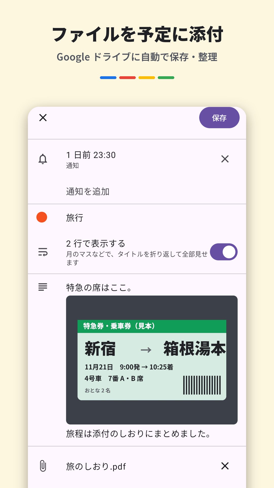

カレンダープラスα の紹介ページへ戻る
カレンダープラスα の使い方
カレンダープラスα（カレンダープラスアルファ）は、あなたの Google カレンダーの予定をそのまま表示・編集し、画像・ファイルの添付や天気など「Google カレンダーのアプリにない機能」を足すアプリです。予定はすべてあなたの Google カレンダーに保存されるので、パソコンやほかのアプリからも同じ予定が見えます。
この説明は バージョン 0.1.1 の画面に合わせています（2026年11月22日）。画面はこれから変わることがあります。
- はじめに：Google アカウントでつなぐ
- カレンダーを見る（月・3週・週・日）
- 予定を作る・直す・消す
- 予定を長押しで動かす
- 説明欄に画像を入れる・ファイルを添付する
- ほかのアプリから「共有」で添付する
- 場所と「ここに行く」
- 色分けに名前を付ける・絞り込む
- 天気を出す（日本国内）
- ウィジェットを置く
- メニューと設定
- よくある質問
1. はじめに：Google アカウントでつなぐ
- アプリを開き、「Google アカウントでつなぐ」を押します
- 端末にログインしている Google アカウントを選びます
- カレンダーとドライブの許可を求める画面が出るので、内容を確かめて「続行」「許可」を押します
「Google はこのアプリを確認していません」という画面が出たときは、Google の確認がまだ終わっていないためです。「詳細」を押し、「カレンダープラスアルファ（安全ではないページ）に移動」を押すと先へ進めます。確認が終わると、この画面は出なくなります。
- アプリが使うのは、あなたのカレンダーの予定と、このアプリが Google ドライブに保存したファイルだけです。ドライブのほかのファイルは見ません
- メニューの「アカウントを追加」で、いくつかの Google アカウントをつなげます。予定はまとめて表示されます
- 許可が切れたときは、メニューに「もう一度つなぐ」が出ます。押すと許可し直せます
2. カレンダーを見る（月・3週・週・日）

- 上の 2 段目で「月・3週・週・日」を切り替えます。左右にスワイプするか「＜」「＞」で、前後の月・週・日に動きます
- 上の見出し（年月）か、今日の日付の形のボタンを押すと、今日に戻ります
- 月の表示で日付を押すと、その日の表示になります
- 週・日の表示は、時刻の目盛りを上下にスクロールして 1 日ぜんぶを見られます
- 上の回る矢印（更新）を押すと、すぐに Google カレンダーから読み込み直します。ふだんは開いたときと、裏で約 15 分ごとに読み込みます
3. 予定を作る・直す・消す
作る
- 右上の「＋」を押します。週・日の表示では、空いている時刻を押してもその時刻から作れます
- タイトル・日時・カレンダー・場所・色・説明などを入れます
- 右上の「保存」を押すと、すぐに Google カレンダーに保存されます
入れられるもの
- 終日・開始と終了・タイムゾーン
- 繰り返し：毎日・毎週・毎月・毎年、「カスタム…」で間隔・曜日・終わりの日や回数
- ゲスト：メールアドレスを足すと、保存したときに Google から案内のメールが届きます
- 通知：「通知を追加」で、通知・メール・ウィジェット（下の「ウィジェットのやること」）と時期を選びます
- 色・2 行表示（長いタイトルを月のマスで 2 行に折り返す印）
直す・消す
- 予定を押すと開きます。内容を変えると「保存」を押せるようになります（何も変えていないときは灰色です）
- 消すときは、予定を開いて「削除」を押します
- 繰り返しの予定では、「この予定」「これ以降のすべての予定」「すべての予定」から選びます
- 祝日など書き込めないカレンダーの予定は、見るだけです
4. 予定を長押しで動かす
週・日の表示では、予定を長押しして動かせます。
- 予定を長押しすると端末が震え、予定が太い枠で囲まれます。そのまま指をなぞると予定ごと動きます（週の表示では左右の列で別の日へ）
- 囲まれた予定の上・下の丸いつまみをなぞると、開始・終了の時刻だけを変えられます
- 指を離すとすぐに保存します。時刻は 15 分ごとにそろいます
- ほかのところを押すと、選ぶのをやめます
- 終日の予定・何日にもまたがる予定は、長押しで動かせません（押すと予定が開きます）
5. 説明欄に画像を入れる・ファイルを添付する

説明欄の画像
- 予定の入力画面で説明欄を押します
- 文字を書き、「画像を挿入」で写真やスクリーンショットを選びます。画像は文字の途中にも入れられます
- 画像を外すときは、画像の右上の×か、すぐ下の「画像を削除」を押します
- 予定を保存すると、画像はあなたの Google ドライブの「カレンダープラス」フォルダに保存されます
- 説明欄の URL は押すと開けます
- Google カレンダーのアプリやパソコンでは、画像の行はリンクとして見えます（押すと画像が開きます）
ファイルの添付
- 入力画面の説明の下の「Google ドライブの添付ファイルを追加」を押し、PDF や写真などを選びます
- 保存すると、ファイルが Google ドライブにアップロードされ、予定の添付欄に入ります。保存中は進み具合が出ます
- 1 つの予定に 25 件まで添付できます
- ドライブでは「日付_カレンダー名_もとの名前」の名前に整えて保存します。予定の日付を変えると名前も変わります
- 予定から外したファイルや、予定ごと消したファイルは、ドライブのゴミ箱へ移ります（30 日以内なら戻せます）
画像と添付ファイルは、カレンダーを共有しているメンバーのアプリでも見られるように、「リンクを知っている全員」が見られる設定で保存します。リンクが書かれた予定を見られるのはカレンダーの共有メンバーとゲストだけですが、リンクが転送されると誰でも見られます。人に見せたくないファイルは添付しないでください。
6. ほかのアプリから「共有」で添付する
- ファイル管理やダウンロードのアプリで、ファイルの「共有」を押し、「カレンダープラスα」を選びます
- 「新しい予定」か「既存の予定」（今日以降の予定から選ぶ。タイトルで探せます）を選びます
- アップロードが終わると「添付しました」と出ます
いくつかのファイルをまとめて共有すると、同じ予定に添付します。文字や URL だけの共有は受け取りません。
7. 場所と「ここに行く」
- 場所の欄には、店名や住所をそのまま入れます
- 欄の右の地図のボタンを押すと、Google マップが開きます。場所を探して「共有」→「カレンダープラスα」を選ぶと、名前と住所が入ります（はじめは手順の案内が出ます）
- 場所が入っている予定には「ここに行く」が出ます。押すと、Google マップで今いる所からの道案内が始まります
8. 色分けに名前を付ける・絞り込む

色分けの名前
- メニューの「色分けの名前」で、Google カレンダーの色に「仕事」「家族」などの名前を付けます。空にすると Google の色の名前に戻ります
- 色の丸か右の「≡」を長押しして上下になぞると、並び順を変えられます
- 画面の上の「名前を共有するカレンダー」で共有カレンダーを選ぶと、そのカレンダーのメンバーと名前をそろえられます
- 名前はこのアプリの中だけのものです。Google カレンダーのアプリの色の名前は変わりません
絞り込み
- 上の段の絞り込みのボタンを押し、色ごとのチェックで表示・非表示を変えます。「これだけ」でその色だけを出します
- 絞り込み中は「絞り込み中」の帯が出ます。右の「✕ 解除」で全部の色に戻ります
9. 天気を出す（日本国内）

- メニューの「設定」→「天気」で、「カレンダーに天気を出す」をオンにします
- 場所を「現在地」か「都道府県を選ぶ」から選びます。現在地のときは、おおよその位置の許可を求めます（位置は端末の中で地域を選ぶのに使うだけで、外へは送りません）
- 気象庁の天気予報（7 日先まで）が、日付の横や下に出ます
- アプリの月・週・日の表示で天気を押すと、地域ごとの気温・6 時間ごとの降水確率・風・天気概況が見られます。左右に動かすと前後の日に変わります
- 予報は気象庁の発表（5 時・11 時・17 時）のあとに自動で読み込み直します
- 日本の外では出ません

- ホーム画面の空いているところを長押しし、「ウィジェット」を選びます
- 「カレンダープラスα」の中から、月・週・日・3週間＋今日・予定リストのどれかを選んで置きます
- 置いたときに出る設定で、表示するカレンダー・背景・週の始まりなどを選びます。あとから、ウィジェットの長押しで変えられます
- 「＜」「＞」で前後に動き、見出しを押すと今日に戻ります。「＋」で予定を作れます
- ウィジェットの絞り込みのボタンで、そのウィジェットに出す色を選べます
- 大きさは自由に変えられます。小さいときは、天気はアイコンだけになります
ウィジェットのやること
粗大ごみの日のような「忘れたくない予定」は、予定の「通知を追加」で「ウィジェット」を選びます。通知の時期（例：1 日前の 9 時）から予定が終わるまで、ウィジェットの上に「今日／明日／あと N 日」の札と題名が出ます。右の ✓ を押すと「済み」になって消えます。
左上の「≡」でメニューを開きます。
- 表示の種類（日・週・月）と更新（最後に読み込んだ時刻も出ます）
- アカウントごとのカレンダー：チェックを外すと、そのカレンダーの予定をこのアプリとウィジェットに出しません（Google カレンダーの設定は変わりません）
- アカウントを追加・×でアカウントを外す（Google カレンダーの予定は消えません）
- カレンダーを共有（ユーザーを追加）：自分のカレンダーを、メールアドレスと権限を選んでほかの人と共有します。共有をやめるのは×です
- 色分けの名前
- 設定：言語（自動か 12 言語）・天気・「このアプリについて」（プライバシーポリシー）
12. よくある質問
予定はどこに保存されますか？
あなたの Google カレンダーです。添付ファイルと画像はあなたの Google ドライブの「カレンダープラス」フォルダです。運営者のサーバーには何も送りません。アプリを消しても、予定とファイルは残ります。
Google カレンダーのアプリで作った予定も直せますか？
はい。Google カレンダーにある予定は、どのアプリで作ったものでも表示・編集できます。
パソコンで直した予定がすぐに出ません
上の更新のボタンを押すと、すぐに読み込み直します。裏では約 15 分ごとに読み込みます。
ウィジェットの表示が古いままです
ウィジェットは予定を読み込んだときと約 30 分ごとに描き直します。急ぐときはアプリを開くか、更新のボタンを押してください。
アプリのアクセスをやめたい
メニューの×でアカウントを外したうえで、Google アカウントの「サードパーティ製のアプリとサービス」からカレンダープラスアルファのアクセスを削除してください。
データの扱いを詳しく知りたい
プライバシーポリシーをご覧ください。
お問い合わせ
DNGG-studio：dngg.studio@gmail.com
本アプリは Google の公式アプリではありません。Google カレンダー、Google ドライブ、Google マップは Google LLC の商標です。天気予報の出典：気象庁ホームページ。
紹介ページへ戻る